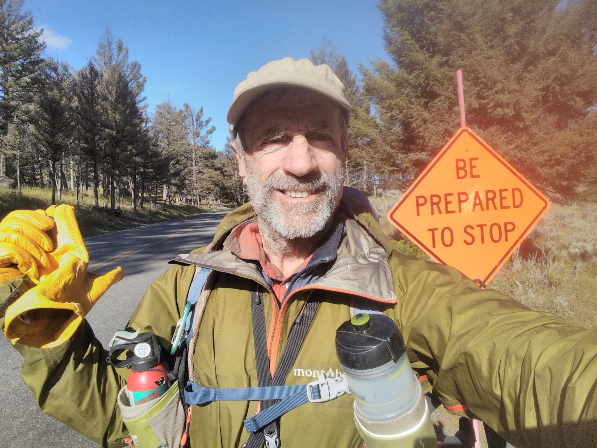
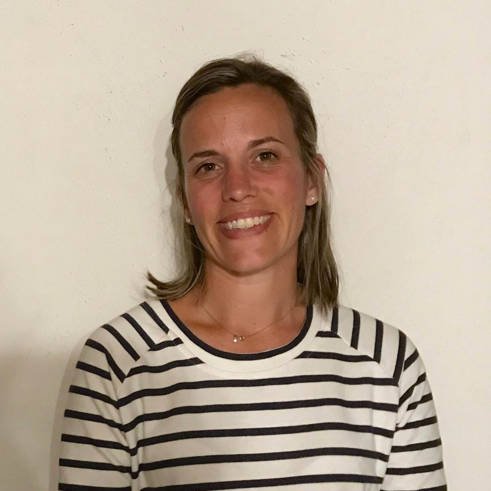
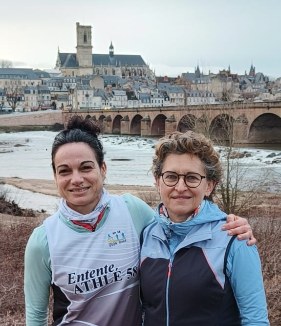
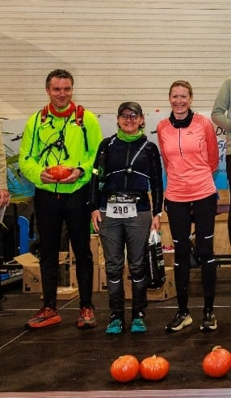
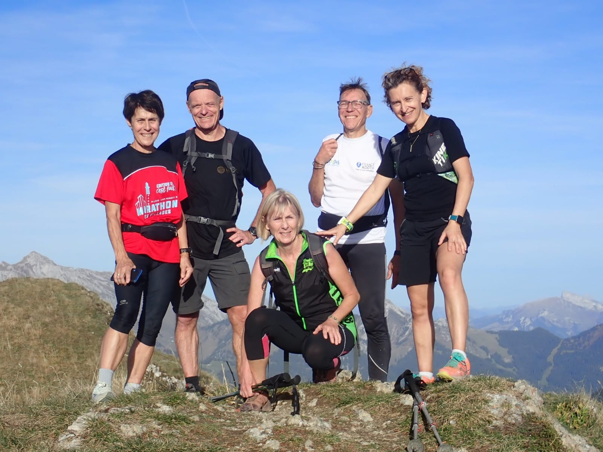
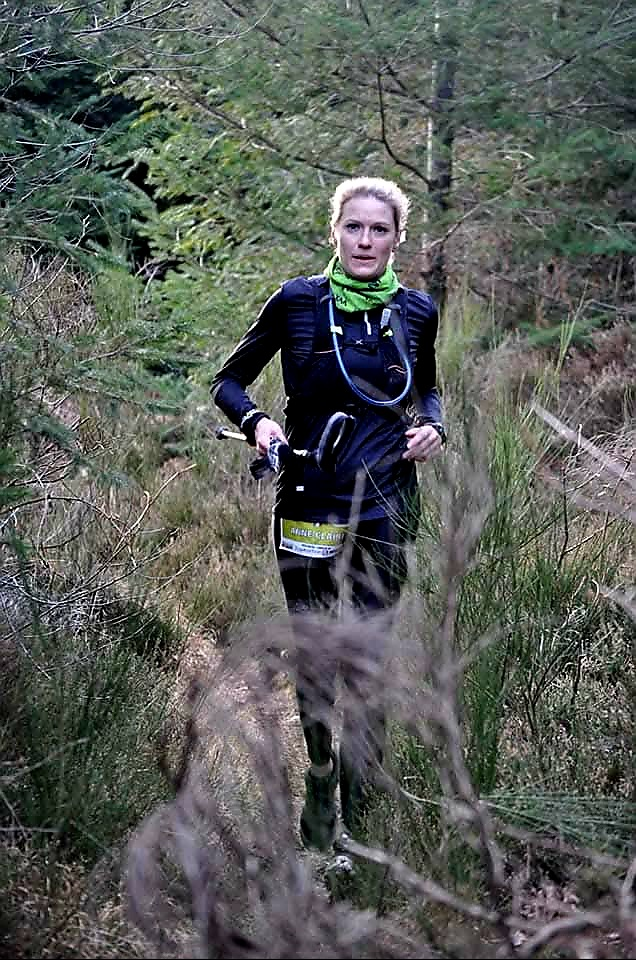

Courir sans blessures,
même avec les années
Pendant de nombreuses années, j'ai participé au groupe TRN, coaché par Mireille Masson. En plus des entraînements hebdomadaires alternant fractionnés et exercices divers, j'ai beaucoup apprécié les week-ends comme par exemple les gorges du Tarn avec un mélange de trails et de vias ferratas ou encore les gorges de la Sioule avec Trail et Canoë. Je conseille vivement. Grâce à elle, j'ai toujours le plaisir de courir sans les blessures qui souvent accompagnent les vieux coureurs.
Du premier pas au semi-marathon
Débutante en running, je me suis lancée le défi de préparer un semi-marathon avec l'accompagnement de Mireille… et je ne pouvais pas espérer mieux. Son coaching est à la fois bienveillant, structuré et parfaitement adapté à mon niveau. Elle est toujours très à l'écoute, disponible et d'une grande réactivité, ce qui fait toute la différence au quotidien. Grâce à elle, je progresse sereinement et avec confiance. Un accompagnement que je recommande les yeux fermés !


Viser les Jeux Paralympiques
avec le bon accompagnement
Marathonienne handisport de niveau international, je vise la qualification aux Jeux Paralympiques de LA2028. Mireille gère le côté sportif de ma carrière en alliant recherche de performance et adaptation à mon handicap visuel. C'est une coach très à l'écoute, professionnelle et bienveillante.
Une organisation sans faille
pour tout le groupe
Mireille possède toutes les qualités nécessaires pour gérer un groupe de sportifs hétérogène. Elle a assuré l'intégralité de la logistique de nos nombreux stages en plein air (organisation, choix des hébergements, planification des activités, tracé des parcours, covoiturage, partage des repas…). Elle a ainsi permis à tous les membres du club TRN de découvrir de nouvelles régions tout en pratiquant diverses activités de pleine nature.


Des séances variées
et des week-ends inoubliables
Membre du groupe TRN, j'ai participé aux nombreux entraînements coachés par Mireille Masson proposant des séances variées et conviviales permettant de progresser. Mireille a proposé en parallèle des week-ends multi activités sportives (Puy de Dôme, Tarn, Haute-Savoie…) dans le même esprit et avec une organisation toujours au top et des conseils avisés.
Des stages clé en main,
que des bons souvenirs
Mireille depuis plusieurs années, dans le cadre du TRN 58, nous organise des stages sportifs sur des week-ends. Elle gère les aspects administratifs mais aussi les propositions d'activités : on n'a plus qu'à s'inscrire !! Que des bons souvenirs !


Dépasser ses limites
avec confiance
J'ai côtoyé Mireille dans le cadre d'entraînement régulier en course à pied. Elle possède une énergie communicative et une capacité naturelle à motiver les autres, même dans les moments difficiles. Son sens de l'écoute, sa bienveillance et sa rigueur lui permettent de s'adapter à chacun, quel que soit son niveau, et de créer une véritable dynamique de groupe. Elle ne se contente pas de coacher physiquement : elle accompagne aussi mentalement, en aidant chacun à dépasser ses limites avec confiance.
Son coaching m'a permis de progresser significativement dans la discipline du trail en alliant l'effort au plaisir. J'ai également participé aux stages de plusieurs jours qu'elle propose. L'organisation est soignée, les activités sont variées et adaptées à tout niveau. Mireille insuffle une dynamique de groupe favorable à l'engagement sportif mais dans la bonne humeur et le respect de chacun.